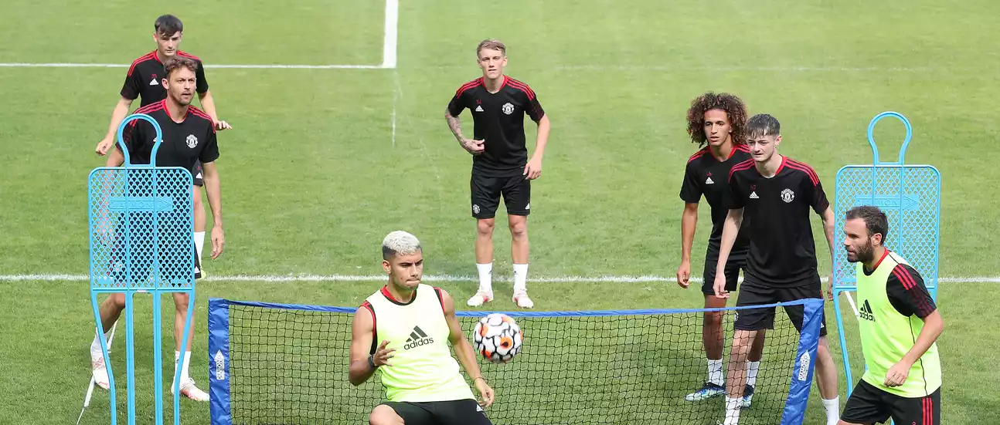
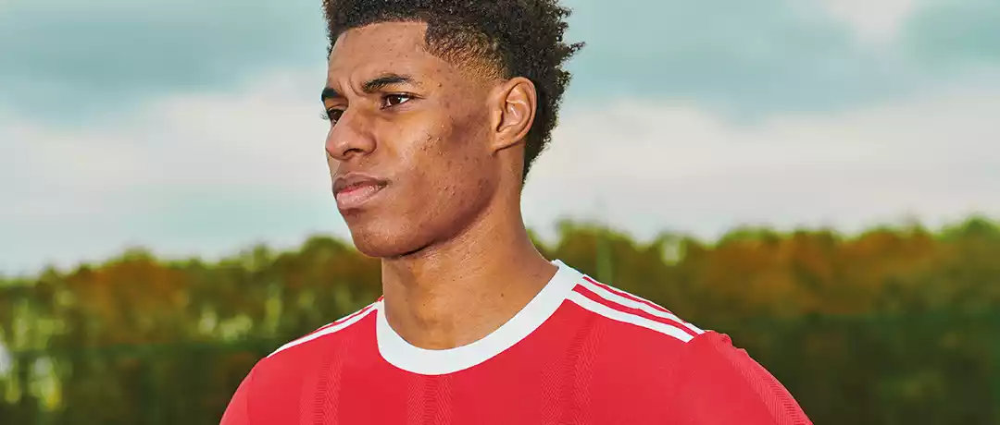
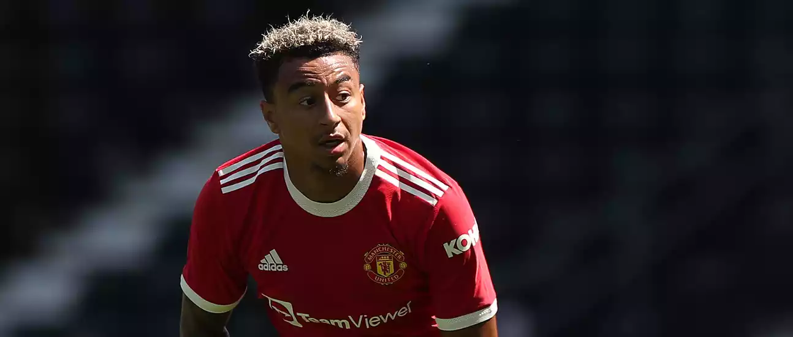

ПЕРВЫЙ ДЕНЬ НА ТРЕНИРОВОЧНОЙ БАЗЕ ЮНАЙТЕД
Подопечные Манчестер Юнайтед впервые провели полный день на сборах команды в Суррее.
В этом году предсезонная подготовка может проводиться исключительно в Соединенном Королевстве, но условия здесь отчетливо ощущаются за границей. Поскольку днем температура превышает 30 градусов по Цельсию, трудно поверить, что мы все еще находимся в
Англии! Вчера в Прайд-парке, конечно, были аналогичные условия, так как красные начали подготовку к новой кампании, победив со счетом 2: 1 над Дерби Каунти Уэйна Руни .И, учитывая, что на каком-то этапе в Ист-Мидлендсе были задействованы
23 игрока из нашей команды из 27 человек для сбора на сборах, голкиперы Матей Ковар и Натан Бишоп не играли, а Дэниел Джеймс и Скотт Мактоминей присоединились поздно - понедельник был светлый день. После отдыха и работы со СМИ утром, ребята
выглядели в расслабленном настроении, когда они встретились в 15:00 BST, прежде чем отправиться на поля для некоторой работы с мячом, такой как упражнения в одно касание и волейбол. Алекс Теллес тоже воспользовался возможностью, чтобы
вытащить несколько трюков, которые вы можете посмотреть в видео ниже.

ОЛЕ ПРЕДОСТАВЛЯЕТ ОБНОВЛЕННУЮ ИНФОРМАЦИЮ О СИТУАЦИИ С РЭШФОРДОМ
Менеджер «Манчестер Юнайтед» Оле Гуннар Сульшер подчеркнул, что еще не принято решение о необходимости операции Маркусу Рашфорду.
Нападающий «красных» играл за сборную Англии на Евро-2020, но после турнира стали поступать многочисленные сообщения о том, что ему предстоит операция по поводу серьезной проблемы с плечом. Поскольку продукт Академии переживает перерыв, как и другие представители
United, которые достигли последних стадий турнира, не было официального подтверждения того, что он обязательно пойдет под нож и будет отстранен на какое-то время. На вопрос репортеров в Pride Park, может ли он подтвердить какие-либо планы
относительно Рэшфорда после товарищеской победы над Дерби Каунти 2: 1, Оле сказал, что еще не в состоянии сделать это. Нет, мы ищем лучшие варианты, - сказал менеджер. Конечно, он ушел, чтобы немного поразмышлять над этим. Мы должны предпринять
наилучшие действия для него и клуба. Мы все еще решаем этот вопрос с экспертами.
ПОДТВЕРЖДЕНО: СОСТАВ ЮНАЙТЕД НА СБОРАХ
«Манчестер Юнайтед» проведет сбор из 27 человек на сборах на этой неделе в Суррее, в преддверии следующего субботнего предсезонного товарищеского матча с «Куинз Парк Рейнджерс».
Красные начали подготовку к кампании 2021/22 с победы 2: 1 в округе Дерби в воскресенье благодаря голам Тахита Чонга и Факундо Пеллистри . Оле Гуннар Сульшер сделал девять замен в перерыве и дал своей команде правильный выход, с минутами в запасе - названием
игры на этом этапе.
ОЛЕ РАССКАЗАЛ О ПЛАНАХ БОМБАРДИРА ПЕЛЛИСТРИ
Уле Гуннар Сульшер сообщил, что Факундо Пеллистри отправится в аренду, чтобы продолжить свое развитие в этом сезоне.
19-летний нападающий из Уругвая забил в предсезонной победе «красных» со счетом 2: 1 над «Дерби Каунти» на «Прайд Парк» во время впечатляющей игры во втором тайме на замене. Выступая после матча, босс сказал, что у юноши было много поклонников, которые
этим летом вернулись в «Юнайтед» после аренды у «Депортиво Алавес».

ОЛЕ: ДЖЕССИ ХОЧЕТ БОРОТЬСЯ ЗА СВОЕ МЕСТО
Уле Гуннар Сульшер хочет видеть больше «настоящего» Джесси Лингарда с атакующим полузащитником «Манчестер Юнайтед», готовым «бороться за свое место» в клубе.
Вторую половину прошлого сезона Лингард провел в аренде у товарища по Премьер-лиге «Вест Хэм Юнайтед» и преуспел, забив девять голов и сделав пять передач в 16 матчах за «Хаммерс». Теперь он вернулся в «Юнайтед» и сыграл вторую половину товарищеской победы
«красных» со счетом 2: 1 против «Дерби Каунти» в воскресенье днем, поразив штангу одним зрелищным ударом. «Джесси вернулся, он был выдающимся игроком и хочет бороться за свое место», - прокомментировал Сульшер на послематчевой пресс-конференции.
СУЛЬШЕР РЕАГИРУЕТ НА ПРЕДСЕЗОННУЮ ПОБЕДУ НАД ДЕРБИ
«Манчестер Юнайтед» получил положительное начало предсезонной подготовки с победы над «Дерби Каунти», а Оле Гуннар Сульшер остался доволен игрой своей команды.
Тахит Чонг вывел «Юнайтед» вперед в первом тайме, выиграв мяч высоко на поле. Оле сделал девять замен в перерыве, а один из запасных, Факундо Пеллистри, удвоил преимущество «Юнайтед» после того, как обошел вратаря. Это первая из пяти предсезонных игр
для «красных», и было много положительных моментов, в основном связанных с фитнесом, но также и с хорошими выступлениями ряда молодых игроков, а также с новым подписанием Тома Хитона. «Я думаю, вы можете видеть, что они [Дерби] могут быть
на неделю впереди нас в предсезонном периоде», - сказал Сульшер MUTV после матча. «Это была первая игра для нас, и нужно немного времени, чтобы перейти в режим матча. Но мы выиграли игру, и этим детям хорошо чувствовать, что они выиграли».